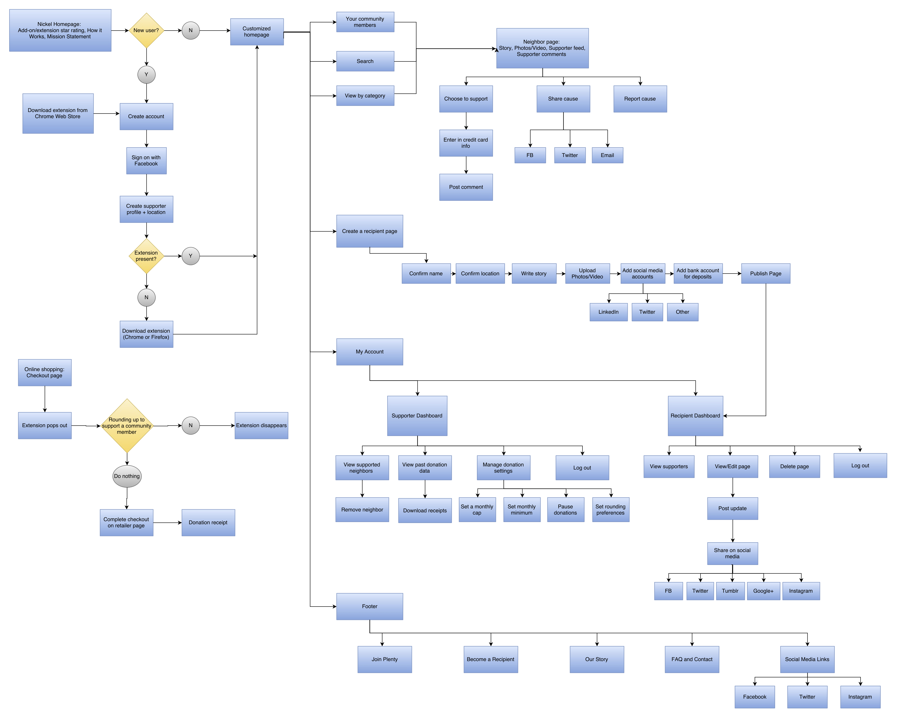

Plenty is a 100% fee-free crowdfunding website that allows users to round up on their online purchases to help other people in need. The app’s model is generating passive good by hitching onto existing user behaviors of online shopping. I envisioned Plenty to be positive tool for deeper connection between community members, and to evolve communities of generosity and care.
Supporters install the Plenty browser extension, and read about and choose to support up to 10 struggling community members. The extension detects each time supporters make an online purchase, and enables them to round up their purchase amounts and donate their change. Community members in need of financial support can sign up for free to receive donations immediately.
I created a user survey and recruited a variety of respondents. They consisted of people who donated to crowdfunding sites, people who ran crowdfunding campaigns, people who cared about humanitarian issues, and people who had a passing interest in the above. I asked them about their experience with using crowdfunding sites, what they liked/disliked, and how they discovered campaigns.
The responses were richly detailed. Most respondents had donated to crowdfunding campaigns before. The main impetus was feeling compassion towards the individual/group in need. Most people donated to social justice and arts causes, and they usually found out about campaigns via social media. For respondents who created campaigns, they wished it was easier to setup and manage their campaigns. They were often struggling with the time and financial constraints that led them to create the campaign in the first place. I completed research to create a competitive analysis on popular crowdfunding sites.
From this data, I extracted four unique user personas: Social Justice Advocate, Concerned Loved One, Struggling to Get By, and Armchair Do-Gooder.


Since this is a site that is essentially asking people to give away their money, I wanted to create a brand feeling of abundance and hope. For Plenty’s color palette, I chose soft tones that reminded me of spring and hopeful new beginnings.
I chose “Plenty” as the app name, because it is a joyful word. It reminds users of their generosity and that they truly have plenty to go around. For the logo, I decided to use a simple logotype in a playful script handwriting font.

Since the goal of Plenty is to help people help others, I knew I needed to incorporate user flows that got out of the way of this goal. Features that delayed support, such as saving or favoriting a community member without pledging to support them, or passing along payment fees to supporters, were off the table.
For supporters, I wanted to minimize the amount of work it takes to start supporting someone. It takes a mere 4 steps: Create a Plenty account, download the extension, read stories, choose community members to support, and carry on with their regular internet browsing. To not round up on a purchase during checkout, supporters have to actively decline this action, making it a seamless passive donation process.
For community members to receive funds, they simply create an account, fill in their profile, and promote their story within their networks. I purposefully made the profile page single page and the preview match the same style as the blank form, so that users would find it straightforward. To foster empathy in potential supporters, the blank profile form contains tips on how to write a credible and powerful story requesting help.
View PrototypeWhen users interacted with my prototype, I received a large amount of enthusiastic feedback. The prototype used familiar desktop design patterns, such as expansive background images, large buttons, and flat form elements. All users were able to easily click through each of the intended flows. Users asked that I add a thank you pop up after clicking to support someone. Another user suggestion was to add a top navigation bar on my main page, with links to the lower sections in the page.
I asked myself, what are the pain points are they trying to address with this feedback? As a designer, I need be able to discern types of feedback, so that I stay within the scope of my objective. I concluded that the first user needed a more obvious visual indicator that they are now supporting someone, so I added a second screen that also asks them to confirm their billing information. For the second user, I decided that since my home page had less content, it would not be useful to add a top nav bar. A new user doesn’t know what specific information they are looking for and will scroll down to learn more. By doing this critical exercise, I succeeded in keeping the Plenty app lean and not dilute it with unnecessary elements.
When designing the main page, I wanted to make it compelling so that users would sign up immediately. The first drafts were very text heavy, and incorporated many blocky segments of color. I increased the use of icons, reduced text, and adding more white backgrounds. I also center aligned most of the elements on the page, so that the user’s eye wouldn’t have to move back and forth across the page.
In the initial mocks, I used pop-up overlays to ask supporters for their billing information as soon as they clicked to support someone. I decided that this UI was too disruptive to the flow, and that I needed to find a gentler way to ask people for sensitive payment details. I replaced it with a separate page, which contained a thank you confirmation and a billing form. There, users could easily go back to the previous page if they changed their mind.
Regarding the browser extension, I initially designed it to appear and hover over a checkout page. The text would ask the user if they wanted to round up and donate their change. After reviewing Plenty’s passive model of giving, I changed the donation action to be opt-out, so that a user who has already decided to donate on every purchase wouldn’t need to take action each time.
 View Prototype
View Prototype